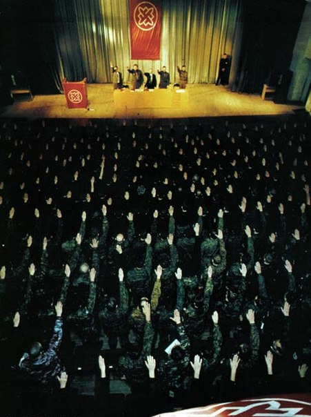

Российские ультра-националисты устраивают беспорядки в Украине
Самое большое внимание российские СМИ уделяют утверждениям, что украинские проевропейские протестующие, которые свергли режим Виктора Януковича, в массовом порядке являются ультра-националистами или фашистами.Термины, используемые российскими новостями для их определения, — «радикалы», «ультра-радикалы», «фашистские молодежь», «боевики» и т.д.Эти люди, по словам официальных российских источников, пытаются распространить «фашистскую чуму» на Восточной Украине и в Крыму.
На деле же мы видим обратное.Это российские провокаторы, завезенные через границу в восточные города Украины, и радикальные пророссийские группы в самой Украине по своему поведению приближаются к нацизму.
Например, в начале этой недели группа пророссийских сепаратистов овладела зданием Донецкой областной администрации в Восточной Украине, водрузила на него российский флаг, и некий Павел Губарев заявил, что он новый глава региона.
Павел Губарев, позже задержанный украинской милицией, оказался членом (или бывшим членом) ультраправого движения Русское Национальное Единство.
Фотография Губарева в составе отряда Русского Национального Единства (третий слева в первом ряду).
Заседание Русского Национального Единства.
Друг Губарева, Ростислав Журавлев, который пришел на переговоры по освобождению Губарева украинской милицией, является членом ультра-националистической партии 'Другая Россия'.Лидер партии Эдуард Лимонов через Twitter призвал российских сепаратистов саботировать украинскую милицию.В конце февраля партия начала кампанию по подписке российских ‘туристов’ в Крым «в случае внезапного наступления туристического сезона».
Российский сайт Lenta.ru сообщил.что Алексей Худяков, который ранее возглавлял московское региональное отделение националистической организации «Русский Щит».присутствовал во время событий в Донецке.Он ранее был под следствием в СИЗО за участие в вооруженном налете на общежитие трудовых мигрантов в Москве.
Posted On: 2014-03-07T21:00:00

Content Date: 2014-03-07
Download Date: 2021-07-16
Document ID: L0C04F84H